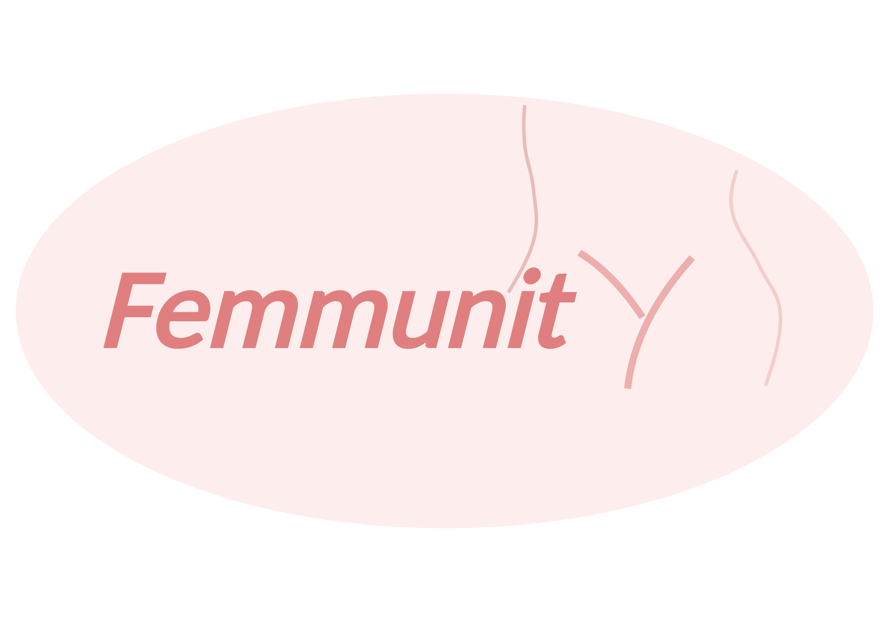
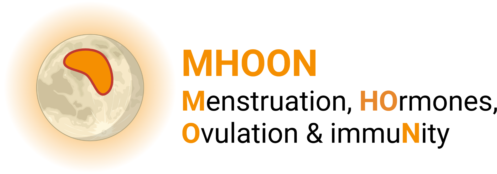
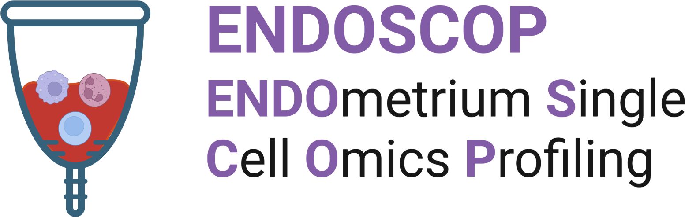

Immune state
Cellular and molecular immune phenotypes.
HUMAN SYSTEMS IMMUNOLOGY · BONN
Across hormonal states, metabolism, environment and time.
We use longitudinal human studies, immune profiling and multi-omics to understand the sources and structure of immune variation in female physiology.
Explore our research ↓OUR VISION
We study the factors that shape human immunity—and how their interactions change across physiological states and biological compartments.
Systems immunology makes it possible to measure immune variation across individuals, over time and across molecular layers. FemmunityX brings this framework to questions in female physiology, while connecting it to our broader work in immunometabolism, population variation and computational immunology.
THE SYSTEM
Cellular and molecular immune phenotypes.
Endocrine and reproductive physiology.
Metabolism and immunometabolic interactions.
Nutrition, microbiome and population context.
Longitudinal change and biological compartment.
FLAGSHIP STUDY

Femmunity is our longitudinal research program connecting peripheral immune dynamics across hormonal states with the biology of the reproductive tissue environment.

01 · NATURAL CYCLE
Longitudinal immune profiling alongside natural hormonal and metabolic variation.
02 · HORMONAL MODULATION
Investigating how exogenous hormonal states intersect with immune and metabolic trajectories.

03 · TISSUE INTERFACE
Using menstrual fluid and single-cell omics to investigate immune biology at the reproductive tissue interface.
WHERE THIS LEADS
Connecting immune states across physiology, time and tissue creates a path toward identifying coordinated patterns—and eventually the drivers—of female immune variation.
BROADER RESEARCH
TransMic / TransInf
Understanding how nutritional and metabolic transitions, microbiome composition and environment shape immune variation across human populations.
InformatYX
Computational approaches for connecting high-dimensional immune data with physiological, metabolic and population-level variables.
HOW WE WORK
SELECTED SCIENCE
Revealing the plasticity of human immunometabolic states and providing a foundation for asking how these responses intersect with sex and female physiology.
Read paper ↗JOIN FEMMUNITYX
We welcome researchers and students interested in human immunology, female physiology, immunometabolism, single-cell biology and computational systems approaches.
Get in touch ↗